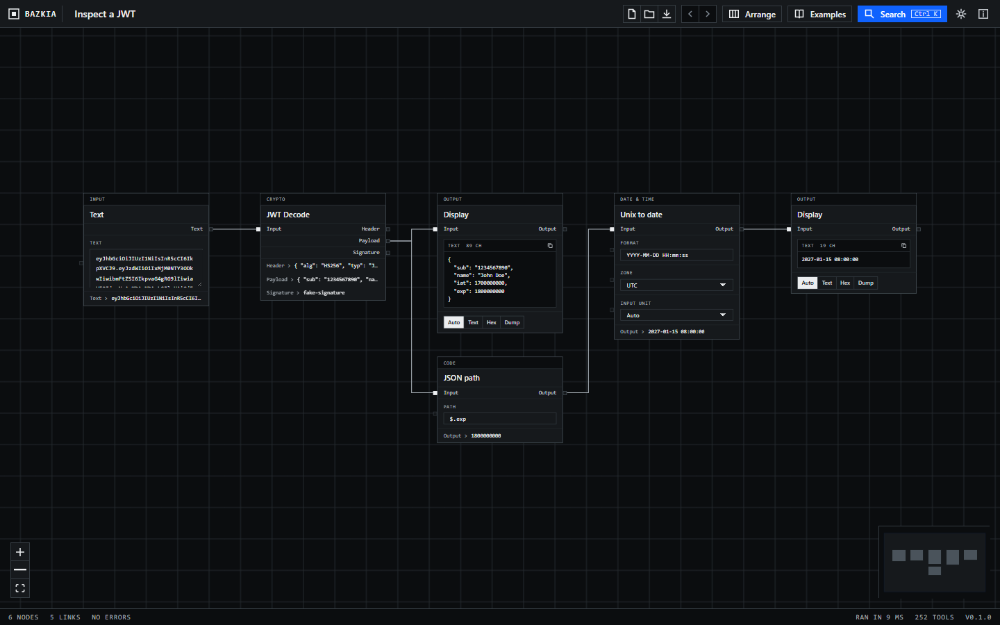
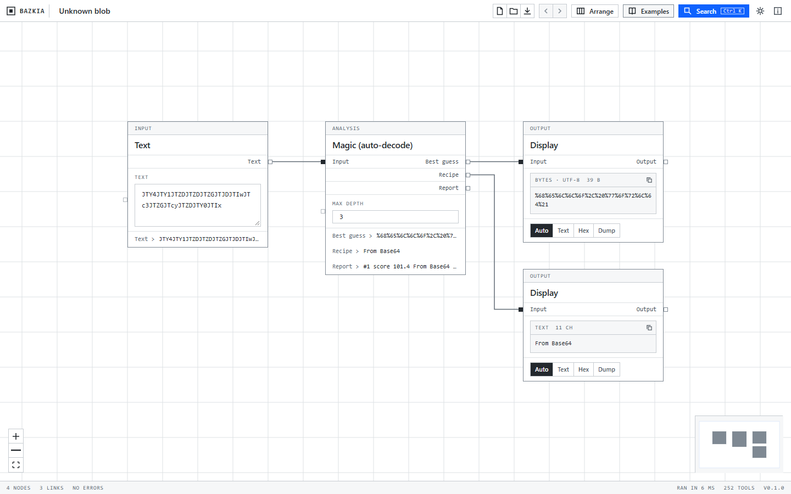
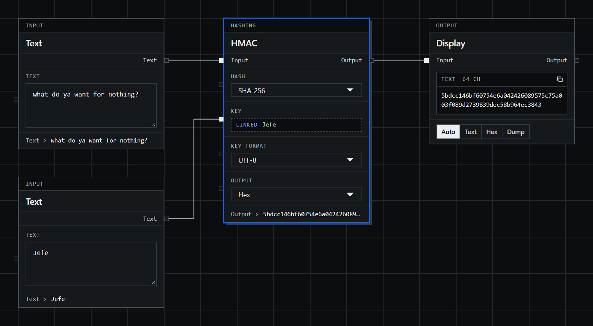

v{{VERSION}} · Windows, macOS, Linux and the browser
Small developer tools, wired together.
Bazkia puts one tool in each box on a canvas. Base64, a hash, a JWT decoder, a regex. Draw a line from one box to the next and the whole chain recomputes every time you type.
{{TOOL_COUNT}} tools · no account · nothing is uploaded


01 / How it works
A graph instead of a recipe.
01
Put tools on the canvas
Press Ctrl K, type a few letters of what you want, hit enter. Or drag from the list on the left. A node is a tool: it has inputs on the left, outputs on the right and its settings in the middle.
02
Draw lines between them
Drag from an output to an input. Let go over empty space and Bazkia offers a tool to add and connect in one step. A line can also feed a setting, so the key for an HMAC can come from another node instead of being typed in.
03
Change anything, see everything
Edit the text at the start and every node downstream updates. Branches fan out, so one input can go to a SHA-256 and an MD5 at the same time. Broken steps show their error on the node and only block what depends on them.
Wire a setting, not just a value
Every setting has a small square on its left edge. Link a node into it and the control is replaced by the incoming value. In this example the HMAC key is its own Text node, so changing the key and the message are two separate edits.
The result on screen, 5bdcc146…ec3843, is the HMAC-SHA256 test vector from RFC 4231.

02 / The tools
{{TOOL_COUNT}} tools in {{CATEGORY_COUNT}} groups.
The catalogue follows CyberChef, which is the thing to beat for this kind of work. The code is written from scratch in TypeScript, using small libraries where it makes sense and the browser's own crypto for AES. Everything runs on your machine.
CyberChef has roughly twice as many operations. Still missing: image processing, PGP, RSA and X.509, the Enigma-style cipher machines, protobuf, OCR, YARA and CyberChef's flow-control operations, which a graph makes unnecessary anyway. Magic, the auto-decoder, is a smaller cousin of the original.
03 / Small things that matter
Built to be used all day.
Local only
No telemetry, no accounts, no network requests of its own. Hashing a password or decoding a token never leaves the window.
Undo and redo
Moves, new links, deleted nodes and settings are all undoable. Typing in one field counts as one step.
Live nodes
Counter, Clock and TOTP re-run on a timer. Debounce holds a value back until you stop typing. Random generators have a re-roll button.
Projects are files
Save a graph as plain JSON, open it later or send it to a colleague. The browser version keeps an autosave in local storage.
Checked against test vectors
Hashes, HMAC, AES, HOTP, CRC, Base32, Base45 and Punycode are tested against published values, not just round trips.
Light and dark
Follows the system by default. The whole interface is square, on an 8 pixel grid, and made from the Boxy design system.
04 / Get it
Pick the one you want.
The browser version is the same code, with save and open going through downloads. Desktop installers are not code-signed yet, so Windows and macOS will ask you to confirm the first launch.
05 / From source
Build it yourself.
You need Node 22 or newer. For the desktop app you also need Rust and the Tauri prerequisites for your system.
git clone https://github.com/avestura/bazkia
cd bazkia
npm install
npm run dev # browser, with hot reload
npm run tauri dev # desktop window
npm test # tool tests
npm run tauri build # installer for this OS06 / Credits
Standing on other people's work.
- CyberChef, from GCHQ, is the model for the catalogue. Bazkia is not affiliated with it and shares no code with it.
- Boxy is the design system behind the app and this page.
- Tauri for the desktop shell, React Flow for the canvas.
- noble-hashes and fflate for hashing and compression.